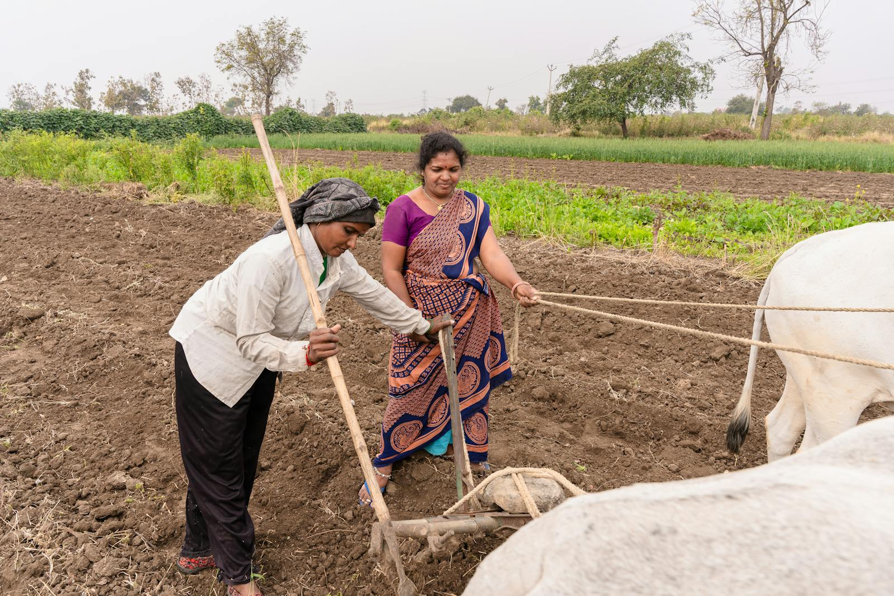
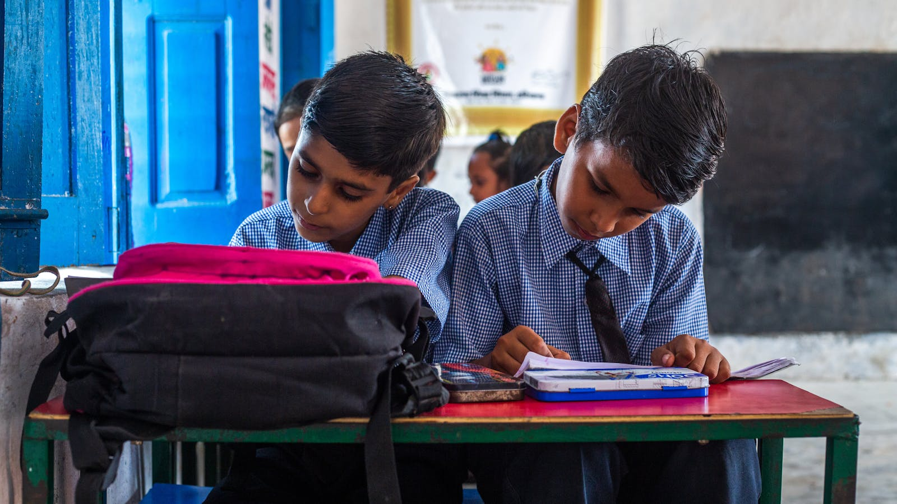
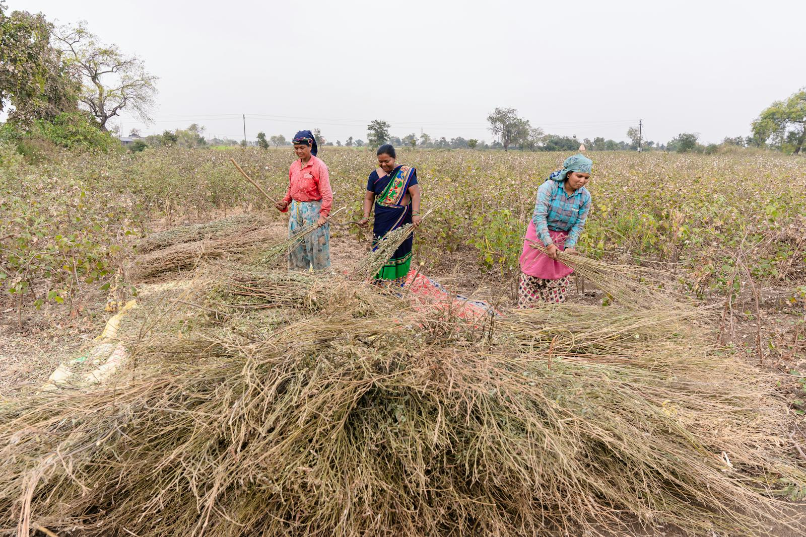

Department of Agriculture
Modernizing farming through innovation and tech.
Advancing agritech solutions, farm management, and sustainable crop cycles.
View DepartmentRegistered Social Development Organization • Rural Community Empowerment
Helpline: +91 9359435183 / 9860352882
Email: info@sankalpgvs.org
Rani, a first-generation learner, completed her secondary education with Sankalp mentoring support and now guides younger girls in her village. In another village cluster, trained women entrepreneurs launched collective micro-enterprises that now provide stable monthly income to their families.
Villages Reached
Children Supported
Women Trained
Integrated rural development through structured, measurable interventions.
Support for child learning, school readiness and awareness drives.
Community health awareness, referral guidance and camp facilitation.
Skill-building, SHG support and entrepreneurship pathways.
Youth livelihood guidance and village enterprise enablement.
Field-level implementation snapshots from community interventions.


